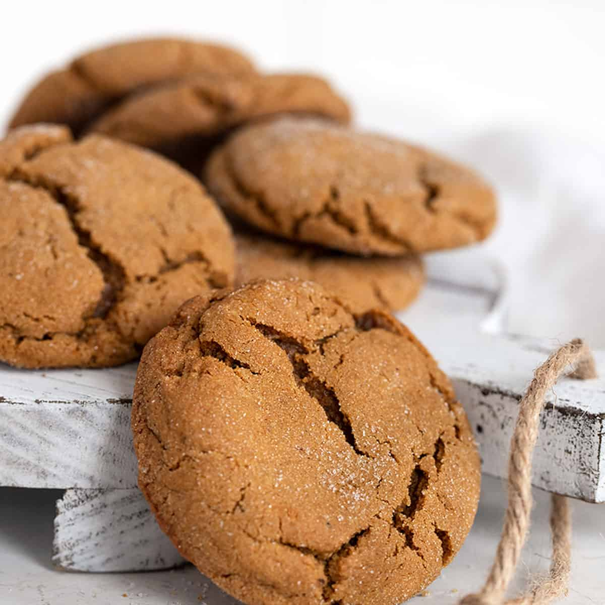

Molasses Cookies

chew molasses crackle cookies that taste like gingersnaps..
Ingredients
- ⅔ cup vegetable oil
- 1 cup white sugar
- 1 egg
- ¼ cup molasses
- 2 cups all-purpose flourr
- 2 teaspoons baking soda
- 1 teaspoon ground cinnamon
- 1 teaspoon ground ginger
- ½ teaspoon ground cloves
- ⅓ cup white sugar
Steps
- Preheat the oven to 350 degrees F (180 degrees C).
- Mix oil and 1 cup sugar in a large bowl. Add egg; beat well. Stir in molasses, 2 cups flour, baking soda, cinnamon, ginger, and cloves. Add more flour to make a firm dough if needed.
- Shape dough into 1 1/4-inch balls. Roll in 1/3 cup sugar. Place 3 inches apart on an ungreased baking sheet.
- Bake in the preheated oven until tops crack, 12 to 14 minutes. Remove cookies from the baking sheet and cool on a rack.
that's it! you're cookies are ready...bon appétit